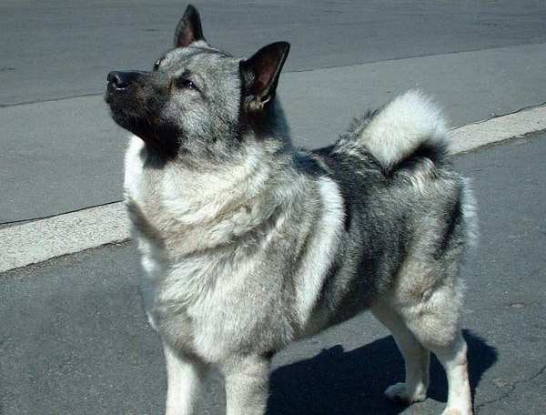

Why an Elkhound?
There are plenty of reasons to get a Norwegian Elkhound but they're not for everybody. Click to see if an Elkhound would be a good fit for you.
Find a Breeder
Interested in getting a dog?
Make sure you get a responsible breeder. Check out what you should look for in a breeder.
Preparations
Before bringing home a dog or puppy, you should know what to expect. Check out these tips so you're prepared for your new pet.